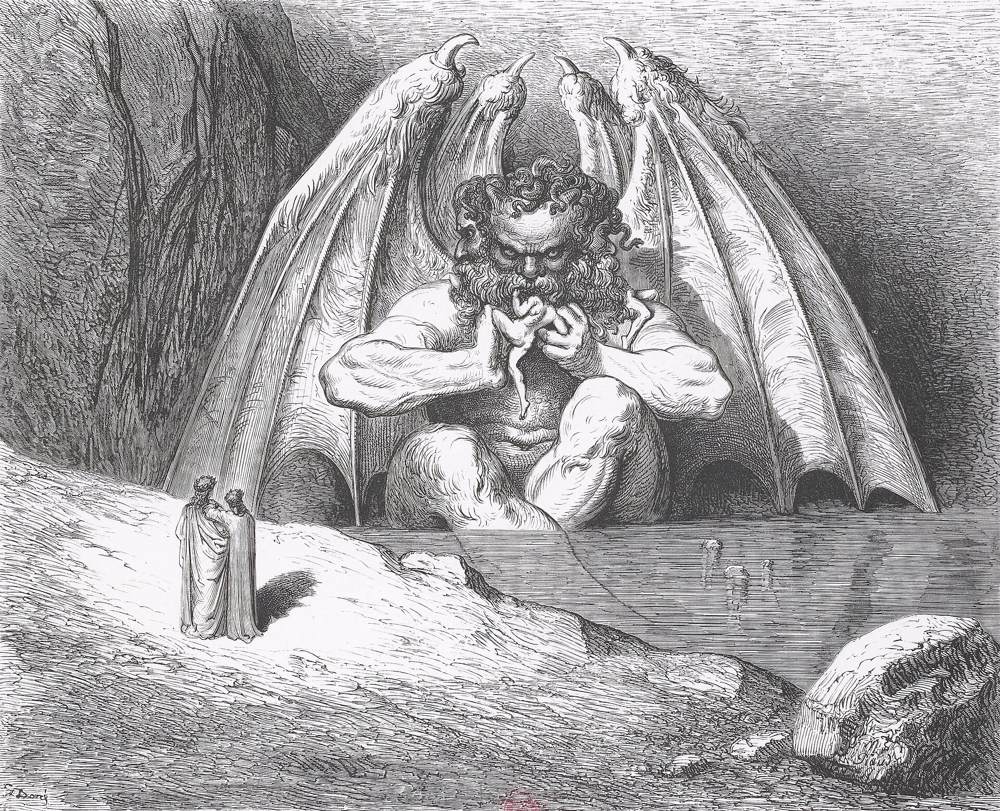

Travel

The ninth and lowest circle of Hell is contained entirely within the frozen lake of Cocytus. The souls here, damned for treason, are trapped within the icy lake for the betrayal of people they personally knew. There are four rounds here to cross before reaching the Center of Hell, the lowest point in all of the Inferno.
The First Round, named after Cain, the murderer of his brother Abel, punishes traitors to their kindred by freezing them in ice only below their necks. You can find Mordred here, the traitorous son of King Arthur.
The Second Round, named after Antenor, the Trojan soldier who betrayed his people for the Greeks, punishes traitors to their country by freezing them in ice below their heads. This restricts them from moving their necks like the souls in the First Round. Here, you can find Ganelon, the French knight who betrayed Charlemagne's army to the Saracens.
The Third Round, named after Ptolemy, who betrayed his father-in-law Simon Maccabaeus after inviting them to a banquet, punishes traitors to their guests by freezing them in ice with only their faces uncovered. In this position, their tears freeze in their eye sockets, preventing them from even crying.
The Fourth Round, named after Judas, who betrayed Jesus for thirty pieces of silver, punishes traitors to their benefactors by completely submerging them in ice. There is nobody to speak to here since they are entirely submerged, so once you get here, there's nothing to see. Feel free to move on to the Center of Hell immediately after arriving here.
At the very bottom of Hell, you can find the three-headed devil Satan devouring the three greatest traitors in history: Marcus Junius Brutus is in his left mouth and Gaius Cassius Longinus is in his right mouth for their roles in the assassination of Julius Caesar, while Judas Iscariot is in his center mouth with his head completely inside for his betrayal of Jesus Christ. Satan is a vile, horrific monster, but do not worry about him hurting you. He is too busy consuming the three traitors and will almost certainly not even notice you.
Tip: Exiting Hell
At this point of your journey, you will have traveled through all of Hell. Congratulations! You now must exit Hell. You can do this by climbing down Satan; don't worry, he won't notice you. Once you reach Satan's genitals, you will have made it to the center of the Earth. You must then climb upwards, as if you are returning to Hell, which will lead you out the other side and onto the surface. When our founder Dante reached this side of the Earth, it was covered in a vast ocean with only the mountain of Purgatory present. However, that path is now closed to tourists. Instead, you will end up on the other side of the Earth—what we now call the western hemisphere—able to once again see the stars.